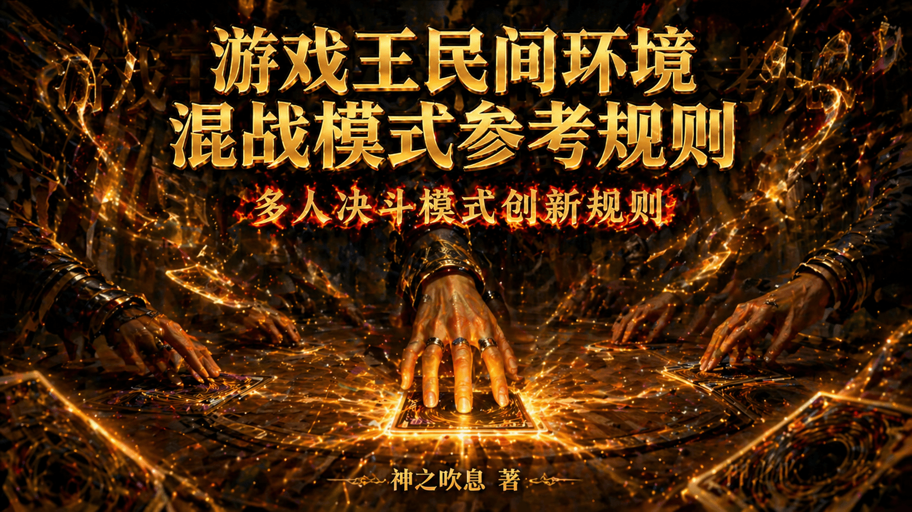

作者：神之吹息
版本：V2
首次发表日期：2026年10月21日
最后修改日期：2026年10月25日
本文/视频参照CC BY（署名）协议开放转载，敬请保留原链接与作者信息噢~感谢传播！支持知识开放、协作与共享。
欢迎各位读者姥爷看完后理性讨论，并支持各位读者姥爷自定义规则。
游戏王IP系列动画中，常见一些（类）BOSS战中存在多人决斗的剧情，或各自为战，或联合对抗BOSS等。无论如何，这些决斗有一定的观赏性，但KONAMI官方并未适时制定规则普及，乃至卡片设计也并未考虑到该部分。
据此，本人以408环境为基础，参考部分动画设定，研究出一套混战模式规则，供各位读者姥爷体验。部分机制参考、致敬了其他桌游的规则及其他玩家的类似灵感，希望这能带给各位读者姥爷不同于常规决斗的乐趣。
本文所述的混战模式（Battle Royal）参考了《游戏王ARC-V》第24集《叛逆之翼 急袭猛禽》的决斗构成，望能让各位读者姥爷体验到铁之意志、钢之强韧的决斗（笑）。
本文的部分专有名词，参照《官方完全规则书（中文翻译）》（https://ocg-rulebook.rtfd.io/）、碎冰的规则整合（https://ocg-rule.readthedocs.io/zh-cn/latest/index.html）。
基础规则版本
混战模式规则介绍
整体原则
行动顺序原则
细节规定（完善中）
落败玩家卡片处理
特殊胜利
混战模式多人模式参考
基础玩法
变式玩法（欢迎微调、拓展！）
后记
本文未特别规定的部分，适用日常决斗时使用的版本——无论是官方环境还是各种民间环境。
以408环境为例，即是“大师规则2020（不适用额外怪兽区）+2006年4月前卡池+2006年3月禁限卡表”。
当然，也可以不局限于408环境，比如结合三战之才模式。
省流版：多人混战，猜拳定顺序，每人第1回合不能抽卡、不能进入战斗阶段，之后正常。攻击可选任意对方，效果“对方”按上下文判定。落败玩家的卡离开游戏。详见下文。
混战模式暂只适用于不适用额外怪兽区的规则版本。
每名玩家的第1回合按照基础规则版本的先攻第1回合规则进行。
每名玩家之间互为“对方”，每名玩家都行动过1个回合称为“1轮”。
战斗阶段中，怪兽的攻击可以选择任意对方玩家的怪兽作为攻击对象，或者对任意没有怪兽的对方玩家直接攻击。
不建议适用特殊胜利。
以408环境为例，即每名玩家第1轮中各自的第1回合不能抽卡、不能进入战斗阶段。 也就是说，第2轮中最先能抽卡、进入战斗阶段的一般是最先行动的玩家。 当然，按照基础规则版本，初始基本分还是8000，初始手卡还是5张。
玩家通过猜拳、掷骰子、抽签等方式决定自身的行动次序（俗称“X号位”）。
回合按次序进行，本轮最后一位玩家回合结束后，进入下轮首位玩家的回合。
按照行动次序，下一位行动的玩家称为“下家”，上一位行动的玩家称为“上家”。
最后一位玩家是首位玩家的上家，反之同理。
只记述“场上”文本，一般指所有现存玩家的场。
例1：发动“激流葬”，破坏的是所有玩家场上的怪兽。
例2：发动“旋风”时，从所有玩家的场上任取1张魔法·陷阱卡为对象。
例3：发动“次元魔法”，适用破坏怪兽的效果时，逻辑和动作类似例2，只是规则上不需要取对象。
例4：发动“神鸟攻击”时，从所有玩家的场上任取2张卡为对象。
一般进入连锁的效果，记述有“对方”的文本，一般指某个（些）特定对方玩家。
需要发动卡或效果的同时确定具体的对方玩家，然后才转移优先权。
例1：发动“地碎”“闪电旋涡”时，需要在发动的同时确定破坏哪名对方玩家的怪兽，然后才转移优先权。
例2：发动“沙尘之大龙卷”时，需要在发动的同时确定破坏哪名对方玩家的魔法·陷阱卡（可与取具体对象同时进行），然后才转移优先权。
例3：发动“零式魔导粉碎机”的效果时，需要在发动的同时造成哪名对方玩家伤害，然后才转移优先权。
（V2版本新增）例4：发动“光之护封剑”的卡时，需要在发动的同时确定哪名对方玩家场上有里侧表示怪兽存在的场合，那些全部变成表侧表示，然后才转移优先权（参考原有发动条件，可以确定场上没有里侧表示怪兽存在的玩家）。
如文本之间存在明显关联性，则上下文之间的“对方”玩家必须是同一人。
例1：发动“次元壁”时，怪兽发动攻击宣言的“对方”与代替承受战斗伤害的“对方”必须是同一人。
例2：“削魂的死灵”只能让被直接攻击成功、受到战斗伤害的那名“对方”玩家丢弃手卡。
例3：“强夺”只能让被夺取控制权的那名玩家回复基本分。
例4：攻击里侧守备表示“魔法神灯”的“对方”与被转移攻击为的怪兽的“对方”必须是同一人。
部分特定阶段·步骤中发动的诱发类效果文本中的“对方”，是作为回合玩家的对方玩家。如果当前是自己回合，则改为适用1的规则确定具体的对方玩家。
例1：“真实之眼”的只回复作为回合玩家的对方玩家的基本分（按照作为回合玩家的对方玩家判断是否存在魔法卡），但所有对方玩家把手卡持续公开。
例2：“风之精灵 迦楼罗”在每名对方玩家的结束阶段都能发动效果，但只能变更当前回合的对方玩家的怪兽的表示形式。
例3：“通灵外质体”发动效果的同时，由回合玩家确定具体的（回合玩家来看的）对方玩家，效果处理时给与该具体玩家伤害。
部分无种类效果文本中的“对方”，可以是任意一名对方玩家。
例1：“电子龙”在只有任意名对方玩家场上存在怪兽（自己场上不存在怪兽）的场合，都可以从手卡特殊召唤。
例2：“魔导电子巨人”只在自己场上的怪兽数量比某一名对方玩家场上的怪兽少2只以上的场合才能从手卡特殊召唤，即不能跨玩家合计计算。
部分永续类效果、效果外文本、进入连锁但持续适用的文本中的“对方”，是所有对方玩家。原则是尽量规避频繁的适用玩家变化。
例1：根据“灵灭术师 海空”的永续效果，所有对方玩家不能把所有玩家墓地的卡除外。
（V2版本修改）例2：“光之护封剑”在所有对方玩家回合计算的均至少3回合后的最后一名满足条件的对方玩家结束阶段破坏，期间所有对方玩家怪兽不能对“光之护封剑”的控制者攻击宣言。
例3：根据“冲锋陷阵的队长”的永续效果，所有对方玩家均不能选择所有玩家其他的战士族怪兽作为攻击对象。
例4：“沉默剑士 LV5”不受所有对方玩家的魔法卡的效果影响。
例5：“神圣之魂”在所有对方玩家战斗阶段内让所有对方场上的怪兽的攻击力下降。
例6：“反怒的熊猫”根据所有对方场上的怪兽的数目上升攻击力。
例7：“古代的机械巨人”攻击的场合，所有对方玩家直到伤害步骤结束时魔法·陷阱卡不能发动。
例8：“催眠术”对所有对方玩家下次的各自回合，都不能把怪兽的表示形式变更。
只要记述的“对方”满足发动条件，不需要增加其他限制，即可以“援助他人”。其他限制仍需遵守。
发动“神圣防护罩 -反射镜力-”时，发动的玩家可以不是被攻击的玩家，但破坏的必须是攻击玩家的怪兽。
发动“阿努比斯的裁决”时，发动的玩家可以不是被那张魔法卡破坏自身魔法·陷阱卡的玩家，但破坏的必须是发动那张魔法卡的玩家的怪兽。
一般进入连锁的效果，记述有这类文本，一般指自己与某个（些）特定对方玩家。
需要发动卡或效果的同时确定具体的对方玩家，然后才转移优先权。
例1：发动“魂粉碎”的效果时，需要在发动的同时确定与哪名对方玩家除外互相墓地的怪兽，然后才转移优先权。
例2：发动“手札对换”时，需要在发动的同时确定与哪名对方玩家进行交换，然后才转移优先权，但公开手卡是向所有玩家公开。
（V2版本新增）例3：“变形壶”的最新效果虽然不完全记述明确的这些文本，但参考历史文本（包括九期前和九期后），确定需要在发动的同时确定与哪名对方玩家把手卡全部丢弃、从卡组抽5张。
记述特定阶段·步骤的这类文本，在所有玩家的对应阶段·步骤中发动/适用。
例1：“通灵外质体”的效果在所有玩家的结束阶段均会发动1次，只对确定的1名具体对方玩家造成伤害。
例2：“阿匹卜之化神”在所有玩家的主要阶段都可以发动。
特别的，有其他文本突破限制的，即使是进入连锁的文本，依然对所有玩家均适用。
例：“变形壶”“手札抹杀”的效果要求“有手卡的玩家”丢弃所有手卡，因而抽卡也是对所有玩家均适用。
部分永续类效果、效果外文本、进入连锁但持续适用的的这类文本，视为所有玩家均适用。
例1：“恶魔侦察者”的效果抽到的卡，是所有玩家确认。
例2：“人造人-念力震慑者”的永续效果，是所有玩家不能把场上的陷阱卡的效果发动。
例3：“黑魔术少女”根据所有玩家墓地“黑魔术师”“黑混沌之魔术师”的数量上升攻击力。
例4：根据“魔力之枷”的效果，所有玩家从手卡把卡召唤·特殊召唤·发动·盖放，都必须支付基本分。
例5：“群雄割据”对所有玩家均有种族种类的限制。
例6：发动“大寒波”后，所有玩家均不能有魔法·陷阱卡的效果使用以及发动·盖放。
部分字面意义明显适用于所有玩家的文本，可以参考“仅“场上”类文本”这部分。
例：“超重力网”适用中，所有玩家的4星以上的怪兽不能攻击。
相较于常规决斗，有以下微调。以下部分并非优先权转移的全部内容，请在常规决斗的基础上进行理解。
①一般原则
从回合玩家开始决定是否进行某些操作（如发动效果等），当回合玩家放弃优先权后，优先权转移到其下家，以此类推，一直到回合玩家的上家放弃优先权，继续回合玩家的回合进程。
②特殊规定
原则为所有玩家都要依次决定一遍，但被直接影响的玩家优先排在其他玩家前面，而被直接影响的玩家内部依然是依次决定，具体细节如下。
如那个操作不直接影响其他玩家，则从操作玩家起算的下家开始决定是否发动效果等，并转移优先权，以此类推，一直到操作玩家的上家放弃优先权。
如那个操作直接影响其他玩家（如攻击、取对象等），则在1的基础上，优先让本次操作受到影响的玩家排在从操作玩家起算的下家前决定是否发动效果等，并转移优先权。
受到影响玩家2名以上的场合，以操作玩家为起点，按那些受到影响玩家之间的上下家关系，依此决定是否发动效果等，并转移优先权。
受到影响玩家均放弃优先权后，以操作玩家为起点，其他玩家未优先决定过的，再按1处理。已经优先决定过的此时不再需要决定，即无需重复询问。
处理完后会回到回合玩家的对应时点，尤其是在同一连锁块中，只要有人决定发动效果，则该连锁块中前面各连锁上的其余未轮到玩家的决定权会被跳过。
例1：共5名玩家A、B、C、D、E依次行动，A以B、D场上各1张卡发动“神鸟攻击”，此时是被直接影响的B、D先依次决定是否连锁，然后才到未被直接影响的C、E依次决定是否连锁，后续无需重新确定B、D是否决定连锁。
例2：例1中，若D决定连锁发动“王宫的通告”，此时无需再让C、E决定是否对A发动的“神鸟攻击”决定是否连锁，而是从D的下家E开始决定是否连锁发动其他卡或效果。实际上就相当于跳过了C、E对A的“神鸟攻击”的连锁决定权。
全部玩家均放弃优先权后，继续回合玩家的回合进程。
必发的诱发类、诱发即时类效果不会被因此跳过，因具体与优先度相关。
③优先度
关于优先度的处理（即同一时点多个诱发类、诱发即时类效果构成连锁的顺序规则），在原有规则的基础上参照上文。
优先度可参考碎冰的规则整合的“同一时点发动多个诱发类效果”：https://ocg-rule.readthedocs.io/zh-cn/latest/c03/%E8%AF%B1%E5%8F%91%E7%B1%BB%E6%95%88%E6%9E%9C.html#id30 。
①落败玩家持有且控制
那些卡全部离开游戏，不视为送去墓地或除外等，尤其是不视为因效果送去墓地、除外、离开场上等。那些效果未发动、未适用的全部不发动、不适用；已发动进入连锁的仍会占用时点，是否继续适用参照是否依赖落败玩家的卡或决定的原则。
但视为离开场上或其他区域，其他玩家的卡或效果可以发动、适用。
例1：落败玩家持有且控制的“三眼怪”“异次元的侦察机”效果不能发动，已发动进入连锁的效果不适用（卡本身或卡组已不存在），仍会占用时点。
例2：以落败玩家控制的怪兽为对象的“拷问车轮”，会在落败玩家的卡全部离开游戏时破坏。
例3：墓地已发动的“阴间领路人”在适用前持有玩家落败的场合，效果处理时依然把现有玩家场上的对象怪兽破坏（效果处理不依赖落败玩家）。
例4：已发动的“地碎”在适用前持有玩家落败，效果处理时已确定的具体玩家场上守备力相同的怪兽2只以上的场合，效果不适用（效果处理依赖落败玩家的决定）。
②落败玩家持有，其他玩家控制
那些卡仍保留在控制者处，直至需要归还持有者控制（离开场上、控制权归还等）时，视为直接从控制者处离开。其余参考“落败玩家持有且控制”。
例：被“强夺”夺取了控制权的玩家落败后，那只怪兽依然继续存在，“强夺”由于依然存在会继续发动回复基本分的必发效果，但不再对落败玩家适用。
③其他玩家持有，落败玩家控制
那些卡送去持有者墓地或除外等，正常发动、处理效果，此处不作赘述。
其余参考“落败玩家持有且控制”。
例1：因落败而送去现有玩家墓地的“三眼怪”，会由该现有玩家发动并适用其效果。
例2：因落败而送去现有玩家墓地的“多尔·多拉”，不能发动效果。
④落败玩家回合处理
若落败玩家非回合玩家，所有处理完成后，继续回合玩家的回合进程。
若落败玩家为回合玩家，所有处理完成后，一般不等待本回合其他阶段·步骤结束，直接进入落败玩家后面首个现存玩家回合的抽卡阶段。伤害步骤例外，会经历完成的本次伤害步骤后再直接进入落败玩家后首个现存玩家回合的抽卡阶段，即不再无意义进入落败玩家的战斗步骤。
例：A控制的“三眼怪”攻击其他玩家攻击表示的“天空骑士 珀耳修斯”后落败，依然需要进入伤害计算后，由“天空骑士 珀耳修斯”发动、处理效果后，再进入后面首个现存玩家回合的抽卡阶段。
⑤战斗步骤的卷回
若落败玩家为原被攻击怪兽的控制者，此时视为“对方场上的怪兽数量发生变化”，适用战斗步骤的卷回。
因极少机会测试特殊胜利的胜率及平衡性，暂不推荐玩家使用特殊胜利卡组进行本规则的游戏。
但欢迎有兴趣的玩家自行尝试并分享数据、体验。
若坚持使用，本人建议在下文的团队模式中使用，且特殊胜利改为“先确定具体的某个对方玩家落败，若此时团队不唯一，则玩家自身再落败”。
限缩解释部分限制攻击的效果影响的玩家范围，减轻决斗的过分拖延。即尽可能让这些效果变成自保而非全员按死。
例1：“光之护封剑”在所有对方玩家回合计算的均至少3回合后的最后一名满足条件的对方玩家结束阶段破坏，期间所有对方玩家怪兽不能对“光之护封剑”的控制者攻击宣言。
例2：“光之护封壁”适用期间所有对方玩家持有支付的数值以下的攻击力的怪兽不能攻击“光之护封壁”的控制者。
例:3：“噩梦之铁栏”发动卡的同时确定具体的对方玩家，在确定具体的对方玩家回合计算的2回合后的结束阶段破坏，期间所有其他玩家怪兽不能攻击“噩梦之铁栏”的控制者或确定具体的对方玩家。
例4：“和平使者”发动卡的同时确定具体的对方玩家，期间“和平使者”的控制者或确定具体的对方玩家场上表侧表示存在的攻击力1500以上的怪兽不能攻击宣言。
多人模式及其变式多种多样、变化无穷，无需局限于本文举例，可以参考其他桌游的多人模式进行。
玩家之间可以随意决定团队的数目及团队规模，当然也可以“一人成队”。
（V2版本新增）涉及团队的，建议初始团队3个以上，或设定队友落败、击杀奖励等补偿机制。
当决斗中只剩下唯一未落败的团队时，该团队决斗胜利。决斗结束。当然也可制定其他胜利条件。
尝试以此进行跨表对决，感受与不对称组队决斗风味不同的BOSS战吧！
①身份局
身份的种类与规则由玩家确定，可参考其他桌游，本文暂不提供具体设计。
玩家尽量按照自己身份（无论隐藏还是公开）的胜利条件行动。
（V2版本修改）可以制定某些身份的特殊机制，身份之间互动的奖惩规则。
在某个或某类身份达到胜利条件时，游戏结束。
②2V2（非“组队决斗”）
与组队决斗不同，这里的4名玩家以混战模式决斗，任意一个团队的2名玩家均落败，决斗结束。
行动顺序随意，但一般建议梅花间竹会更有游戏性。想连续行动的也可以参考“A1→B1→B2→A2→A1→……”的次序。
在某名玩家落败时，其队友立刻选择其中1项补给规则：
回复4000基本分。
抽2张卡。
回复2000基本分，抽1张卡。
放弃补给。
补给规则不诱发或适用对基本分变化、抽卡的效果，不受“不能进行”类效果的影响。
【V2版本完善】③3V3（无退出机制）
6名玩家分成2个3人团队，梅花间竹行动，并各自准备2个备用卡组。
在某名玩家落败时，清空其控制的所有卡，自行选择1个备用卡组，抽5张卡，仅在第1轮不能抽卡、不能进入战斗阶段，其余轮数正常进行回合。
根据落败玩家的身份有以下处理。
回合玩家：在同一回合的同一阶段，继续决斗，已经进行过的通常召唤，发动、使用过的卡和效果次数不会重置。
非回合玩家：暂时离开决斗，不能行动，不受其他玩家影响，其他玩家不能发动会直接影响暂时离开决斗玩家的卡和效果。继续当前回合、当前阶段，在上家的回合结束后加入决斗。多人同时落败的场合，按照顺序在各自上家的回合结束后加入决斗。
回合玩家与非回合玩家同时落败的场合，按照上述规则分别处理，互不干扰。
当某名玩家落败，该团队无备用卡组可用时，另一团队决斗胜利。决斗结束。
【V2版本新增】④KOF（或称WRGP）
6名玩家分成2个3人团队，在选择先后攻前确定团队内3人的出场顺序并固定卡组，各团队同时只有1名玩家进行决斗。
在某玩家落败时，清空其控制的手卡、卡组、额外卡组，保留场上、墓地、除外状态的卡，其未落败队友根据已经确定好的出场顺序和卡组进行准备。落败玩家的队友加入决斗的回合就能抽卡、进行战斗阶段。
根据落败玩家的身份有以下处理。
回合玩家：立刻结束落败玩家的回合，队友加入决斗。
非回合玩家：落败玩家的队友暂时离开决斗，不能行动，不受其他玩家影响，另一方玩家不能进行会直接影响暂时离开决斗玩家及其保留的卡的行动。继续当前回合、当前阶段，在当前回合结束后加入决斗。
同时落败的场合，按照上述规则分别处理，互不干扰。
当某个团队3名玩家均落败时，，另一团队决斗胜利。决斗结束。
①杀上保下
一般建议3人进行。
每人的胜利条件相同：在上家决斗落败的同时，保障下家决斗不落败。
任意一名玩家达到胜利条件后，决斗结束。
2人以上同时决斗落败的场合，改为唯一现存玩家决斗胜利。决斗结束。
②敬请期待
本文V1版本历经数月断断续续写成，本文可以当作简易的规则书使用。
（V2版本新增）从V2版本开始不断修复漏洞、新增机制，改善游戏体验。
为减少规则争议，考虑的情况较多，框架亲自玩一次基本就懂了，具体细节可以简化为碰到了再查阅。
也欢迎各位读者姥爷提出意见、建议，并亲自参与微调、拓展各种玩法。
用决斗，给大家，带来笑容吧！